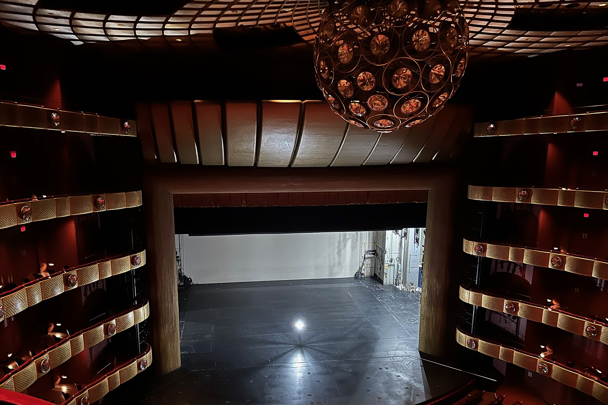

O que é a luz fantasma, a lâmpada que nunca se apaga nos teatros?

Quando o último espetáculo termina e a equipe fecha as portas, os teatros de tradição repetem um pequeno rito: alguém empurra até o centro do palco um pedestal com uma lâmpada nua, liga a chave e vai embora. A lâmpada passa a noite acesa, sozinha, diante de uma plateia vazia. Ela se chama luz fantasma, tradução direta do inglês ghost light, e reúne numa só peça de equipamento os dois lados do ofício teatral: a segurança de quem trabalha no palco e a convivência bem-humorada com os fantasmas que, segundo a superstição, moram em toda casa de espetáculos.
O costume é seguido na Broadway, no West End de Londres e nas grandes casas de ópera, e aparece nos levantamentos brasileiros sobre crenças de palco. Em 2020, com os teatros do mundo fechados pela pandemia, a lâmpada solitária ganhou um segundo sentido, o de promessa de reabertura.
Para que serve uma lâmpada acesa num palco vazio?
A resposta mais simples é evitar acidentes. Um teatro às escuras é um labirinto de cenários, cabos, contrapesos e alçapões, com um agravante: a beira do palco termina num buraco de vários metros, o fosso da orquestra. A luz fantasma permite atravessar a sala e chegar aos interruptores sem tropeçar em nada.
"No fundo é segurança, porque à noite tudo é desligado. A borda do palco dá direto no fosso da orquestra e, se não houvesse luz nenhuma, seria muito fácil alguém passar da beirada e cair", explicou Kim Russell, gerente de palco do musical Legally Blonde, em levantamento do site americano Playbill sobre a tradição.
Os manuais americanos de teatro registram ainda uma história célebre, embora nunca documentada: a de um ladrão que teria invadido um teatro às escuras, caído do palco, quebrado a perna e processado a casa. O pesquisador James Fisher, autor de dicionários históricos do teatro americano, registra o caso como lenda que virou argumento em favor da lâmpada.
De onde vem o nome "luz fantasma"?
A explicação está numa das superstições mais antigas do meio: a de que todo teatro tem um fantasma. A lâmpada acesa serviria para que esses moradores invisíveis enxerguem o palco e façam ali seus próprios espetáculos de madrugada, saindo satisfeitos e sem vontade de sabotar cenários e temporadas. Há quem defenda a versão oposta, a de que a luz serve para afastá-los. O levantamento do jornal Gazeta do Povo sobre mitos do teatro, assinado pelo jornalista Ricardo Sabbag, lembra que a mesma crença explica o dia semanal de folga das casas: o palco fica livre para os fantasmas.

Alguns teatros levam o cuidado além da lâmpada. O Palace Theatre de Londres mantém dois assentos do balcão permanentemente travados na posição aberta, reservados aos fantasmas da casa. Já o New Amsterdam, na Broadway, dispensa o pedestal clássico por exigência das normas de segurança do prédio, que obrigam a manter várias luzes ligadas.
"Temos um fantasma, mas não temos uma luz fantasma no palco. Nossas luzes fantasmas ficam lá em cima, no urdimento, e brilham sobre o palco", contou ao Playbill Dana Amendola, vice-presidente de operações da Disney Theatrical, responsável pela casa.
O fantasma em questão é Olive Thomas, corista das revistas de Ziegfeld morta em 1920. Fotografias dela estão penduradas em todas as entradas e saídas do New Amsterdam, e elenco e equipe costumam se despedir da moça com um beijo soprado ao fim do expediente. A luz fantasma pertence ao mesmo repertório de crenças de bastidor que já rendeu por aqui a matéria sobre por que se diz "merda" antes da estreia e que inclui o hábito de nunca pronunciar o nome Macbeth, a tragédia de William Shakespeare, dentro de um teatro.
A tradição nasceu nos tempos da iluminação a gás?
É a teoria mais repetida sobre a origem do costume. Nos teatros do século 19, iluminados a gás, era comum deixar algumas chamas baixas acesas durante a noite para aliviar a pressão das tubulações de gás. Com a chegada da eletricidade, a chama de serviço teria sido substituída pela lâmpada no pedestal, e a rotina permaneceu.
Nos Estados Unidos, o equipamento também atende pelo nome de equity light, ou lâmpada do sindicato, o que sugere que seu uso teria sido exigido pela Actors' Equity Association, entidade dos atores americanos. A exigência, porém, nunca foi comprovada. Como acontece com boa parte das superstições de palco, a origem exata se perdeu, e sobraram as versões.
Por que a luz fantasma virou símbolo na pandemia?
Com os teatros fechados pela covid-19 a partir de março de 2020, a lâmpada solitária deixou os bastidores e virou imagem pública. A Ópera de Sydney manteve luzes fantasmas acesas em quatro de suas salas de espetáculo durante o fechamento, gesto seguido por casas da Austrália, do Canadá e dos Estados Unidos como sinal de que a reabertura viria. O Royal Alexandra, de Toronto, somou à lâmpada uma marca histórica: o teatro já havia atravessado a pandemia de gripe de 1918 com sua luz fantasma acesa. Na Broadway, reportagem da rede CBS registrou que todos os palcos fechados mantinham a sua.
O símbolo transbordou para a criação artística. A West Australian Opera batizou de Ghost Light Opera sua série de árias transmitidas de palcos vazios. O crítico americano Frank Rich intitulou sua autobiografia Ghost Light: A Memoir, e companhias dos Estados Unidos, de Seattle a Oklahoma City, levam o nome da lâmpada. Ela segue acesa porque protege quem trabalha no escuro e, de quebra, mantém os fantasmas de bom humor.
Perguntas rápidas
O que é a luz fantasma do teatro? É uma lâmpada única, geralmente montada num pedestal no centro do palco, que fica acesa sempre que o teatro está vazio e às escuras. O nome vem do inglês ghost light.
Para que ela serve na prática? Para evitar acidentes: sem ela, quem entra num teatro escuro corre o risco de cair no fosso da orquestra ou tropeçar em cenários e cabos antes de achar os interruptores.
Por que o nome fala em fantasma? Pela superstição de que todo teatro tem um fantasma morador. A lâmpada serviria para que ele enxergue o palco e faça seus próprios espetáculos de madrugada, ou, na versão oposta, para mantê-lo longe.
A luz fantasma ainda é usada hoje? Sim, de grandes casas de ópera a teatros de bairro. Na pandemia de 2020, salas fechadas da Broadway à Ópera de Sydney mantiveram a lâmpada acesa como promessa de que voltariam a abrir.